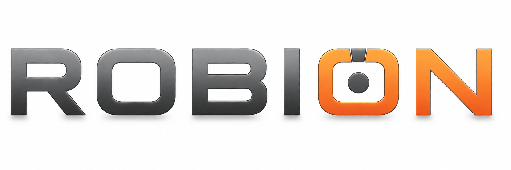

Metal
Pomieszczenia
Hydro
Projekt lokalny · mm
Otwórz
↓ Zapisz projekt
Biblioteka
↶
↷
↖ Wybierz
3D
Przód
Góra
Bok
Dopasuj
Zbliż element
Właściwości
Siatka
Ukryta
Delikatna mgła
Edycja
Widoczność
Sześcian
250 mm
100 mm
Krok ruchu
1 mm
10 mm
100 mm
Płaszczyzna
XZ · pozioma
XY · przednia
YZ · boczna
Warstwa [mm]
Wymiary
ROBION HYDRO · WYMIARY W MM
Przeciągnij element, aby go przesunąć. Tło obraca widok; prawy przycisk przesuwa kamerę.